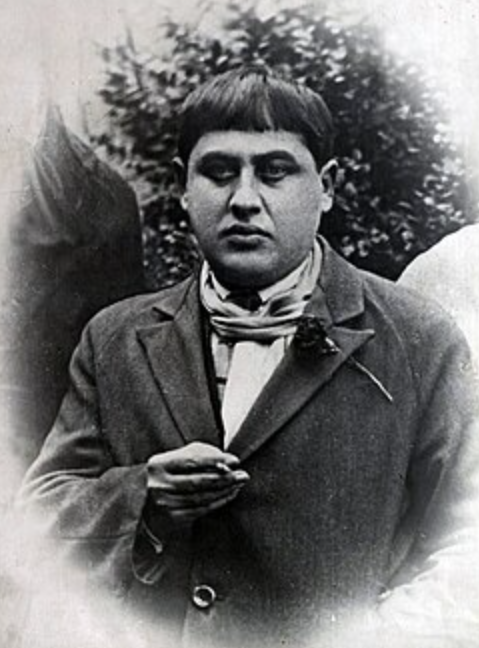
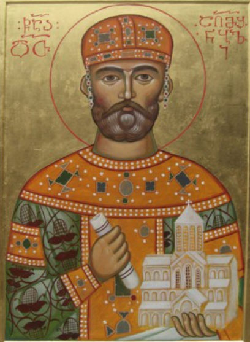

იმერეთს ჩრდილოეთით ესაზღვრება: რაჭა-ლეჩხუმი და ქვემო სვანეთი
აღმოსავლეთით ესაზღვრება: შიდა ქართლი
სამხრეთით ესაზღვრება: სამცხე-ჯავახეთი
დასავლეთით ესაზღვრება: გურია და სამეგრელო
საინტერესო ფაქტები :D
Document
1.ქუთაისი არის იმერეთის დედაქალაქი, იგი ითვლება ერთ-ერთ უძველეს ქალაქად ევროპაში — ადამიანები ამ ტერიტორიაზე ცხოვრობდნენ ჯერ კიდევ
ძვ.წ. II
ათასწლეულში.
2.სათაფლიის ნაკრძალში, ქუთაისთან ახლოს, დინოზავრების ნაკვალევია შემორჩენილი ქანებში — მსოფლიოში ერთ-ერთი
იშვიათი და ღირებული აღმოჩენაა.
3.ქუთაისში მდებარეობს ბაგრატის ტაძარი, რომელიც აშენდა თითქმის 1000 წლის წინ! ის ძალიან ლამაზი და
ისტორიული
ადგილია.
4.გელათის მონასტერი ააშენა მეფე დავით აღმაშენებელმა. აქ ერთ დროს "მეცნიერების აკადემია" იყო ანუ,
მღვდლები და
მეცნიერები ერთად სწავლობდნენ და წიგნებს წერდნენ!
5. კაცხის სვეტი მდებარეობს ჭიათურის რაიონში სოფელ კაცხში.
მისი სიმაღლე 40 მეტრია. სვეტის ზემო ბაქანზე დგას 2 მცირე ზომის ეკლესია.
აქ ქალების ასვლა აკრძალულია და მხოლოდ მამაკეცებს ბერების კურთხევით შეუძლიათ
ასვლა.
6.ეს მხარე ცნობილია გემრიელი ყურძნით და ბევრი ოჯახი აქ ღვინოსაც აკეთებს ტრადიციულად და სახალისოდ!
7.იმერეთიდან ბევრი ცნობილი და გამორჩეული ადამიანი იყო. ესენი არიან:
მუხრან მაჭავარიანი
პავლო იაშვილი
გალაქტიონ ტაბიზე
აკაკი წერეთელი

ტიციან ტაბიძე

დავით აღმაშენებელი
და ბევრი სხვა
ქვიზი !
1.რა ესაზღვრება იმერეთს ჩრდილოეთით? [დააჭირეთ ერთ ერთ პასუხს რომ გაიგოთ რომელია სწორი]
2.სად მდებარეობს სათაფლია?
3.რამდენი ხნის წინ აშენდა ბაგრატის ტაძარი?
4.რას აკეთებდენ ადრე მეცნიერები გელათის მონასტერში?